What makes a human concept cell fire?
The 342 pictures shown to 21 epilepsy patients, pushed through eight vision networks and held up against 1809 single neurons. Late-layer geometry tracks the medial temporal lobe; nothing about a picture by itself predicts which one a patient's neurons will pick.
- A0 Data & replication
- A1–A2 The stimuli
- A5 What concept cells like
- A3 Geometry (RSA)
- A4 Single neurons
- A6 Behaviour
- A7 Models compared
- Caveats & next
Data and replication
All 41 NWB files were streamed over HTTP; only images, trial tables and spike times were pulled out. Unit counts per area reproduce Kyzar et al. exactly, behaviour matches (88.7% correct; RT rises with load), and re-running the concept-cell criteria (permuted one-way ANOVA + max-vs-rest permutation t, 200–1000 ms) yields 31.8% concept cells in the MTL and 6.0% in the MFC during screening (paper: 32.8% / 5.4%). MTL concept cells keep firing during the maintenance period when their preferred picture is held in memory (paired p = 7×10−9; 36% individually significant), and MFC cells do not — the persistent-activity result of Kamiński et al. 2017 falls out of the same pipeline.
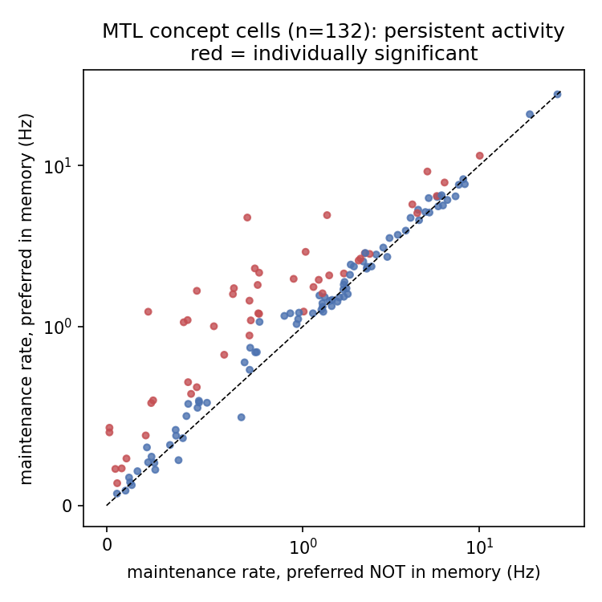
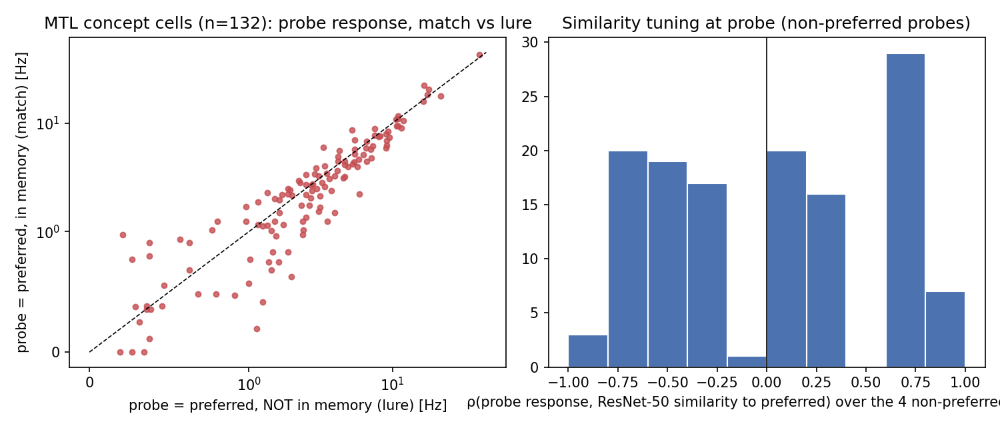
The stimuli — and which ones became memoranda
Only 342 distinct pictures exist across all patients; the pool is heavily reused (one picture reached 16 patients). CLIP zero-shot labels put 37% at faces/people, 14% animals, 11% landmarks, 10% vehicles, and the remainder objects, scenes with people, nature, food and cartoons.
The five Sternberg memoranda per patient were chosen online as the pictures that drove the most selective neurons. Almost nothing about a picture by itself distinguishes them: no category is enriched (faces OR 1.4, n.s.), no CLIP attribute, no low-level statistic and no DNN-space descriptor (typicality, isolation, distance to centroid) separates memoranda from the rest of a patient's set (all FDR q > 0.2). The one exception is a detected face (MTCNN): 62% of memoranda contain one vs 49% of the rest (AUC 0.57, q = 0.02), and their faces are larger — matching the amygdala concept cells' face preference below. Our own replicated neural selectivity does separate them (within-subject AUC 0.67–0.71) — but a picture that "won" in other patients is barely more likely to win in this one (leave-one-subject-out AUC 0.54).
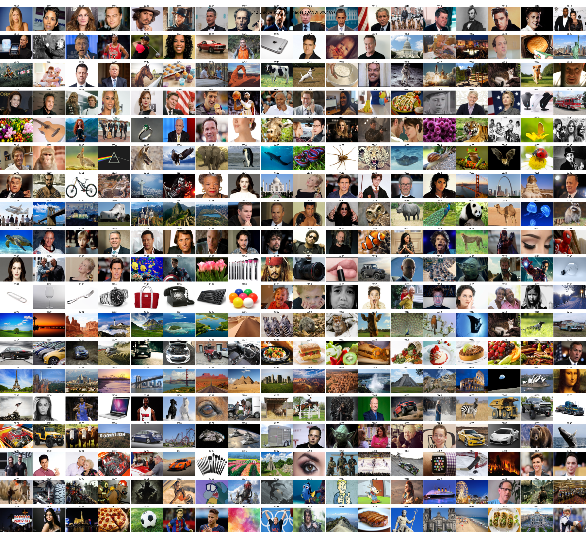

| category | memoranda | rest | odds ratio | p | q |
|---|---|---|---|---|---|
| cartoon_art | 2 | 15 | 1.497 | 0.644 | 0.829 |
| face_person | 53 | 492 | 1.428 | 0.094 | 0.682 |
| scene_with_people | 7 | 57 | 1.397 | 0.357 | 0.682 |
| object | 6 | 50 | 1.360 | 0.454 | 0.682 |
| landscape_nature | 6 | 70 | 0.953 | 1.000 | 1.000 |
| landmark_place | 10 | 148 | 0.726 | 0.438 | 0.682 |
| food | 2 | 35 | 0.630 | 0.763 | 0.858 |
| animal | 9 | 156 | 0.608 | 0.221 | 0.682 |
| vehicle | 5 | 92 | 0.585 | 0.335 | 0.682 |
What concept cells like
Against the composition each cell actually saw, MTL concept cells lean toward famous faces (58% prefer a person picture vs 47% shown; CLIP "famous" AUC 0.565, q = 0.047) and away from pictures containing text or logos (q = 0.007). Per shown picture, animals recruit the most cells (0.19 per patient), then faces (0.14), vehicles, places, food and finally objects (0.01). Right-amygdala concept cells prefer animals four times as often as left-amygdala cells (21% vs 5%, Fisher p = 0.04) — the right-amygdala animal preference of Mormann et al. 2011, rediscovered in an independent dataset — and, as shown below, right-amygdala cells are also the ones that generalise along DNN similarity (ρ 0.30 vs 0.04 on the left; hemispheres are partly confounded with patients).
Overall MTL population drive (mean z over all MTL units) is category-structured (Kruskal–Wallis p = 0.0006: people highest, food and objects lowest); pictures that sit centrally in DNN space drive the MTL more (ρ ≈ −0.28 with distance-to-centroid), but that effect is almost entirely carried by category.
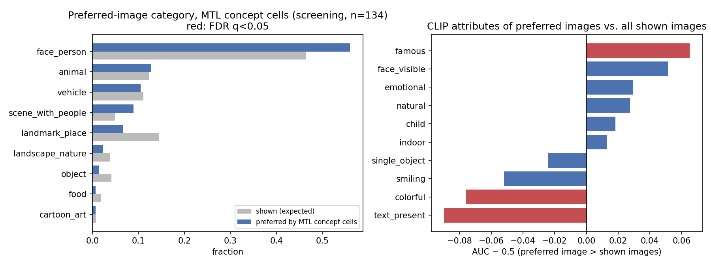
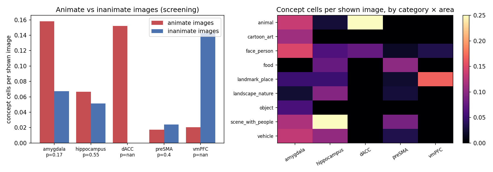
| area | concept cells | cells / animate pic | cells / inanimate pic | frac cells animate | frac shown animate | Wilcoxon p |
|---|---|---|---|---|---|---|
| amygdala | 101 | 0.158 | 0.067 | 0.812 | 0.667 | 0.173 |
| hippocampus | 33 | 0.067 | 0.051 | 0.667 | 0.663 | 0.547 |
| dACC | 15 | 0.152 | 0.000 | 1.000 | 0.585 | nan |
| preSMA | 11 | 0.017 | 0.024 | 0.545 | 0.619 | 0.398 |
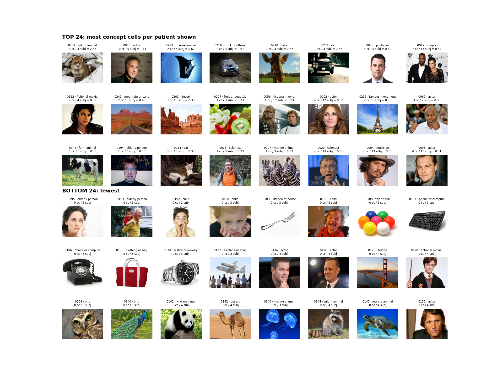
Two further checks make the "patient × picture" point. Concept cells in different patients that prefer the same picture agree on the rest of their tuning no better (ρ = 0.04, n.s.) than cells preferring different pictures of the same category (0.045), both above different-category pairs (0.008): what transfers across people is category structure. And a leave-one-subject-out classifier trained on other patients cannot predict which pictures a held-out patient's concept cells will prefer from any feature set (AUC 0.44–0.49). Category itself is decodable from single-trial MTL population activity, but only weakly (+4.5% over chance; MFC and hippocampus at chance).
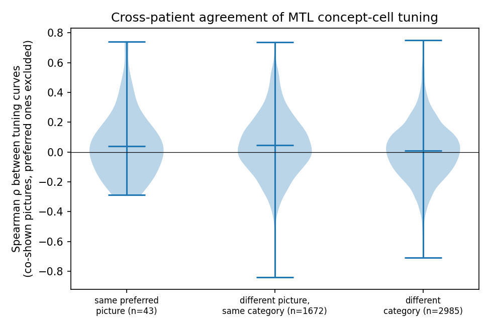
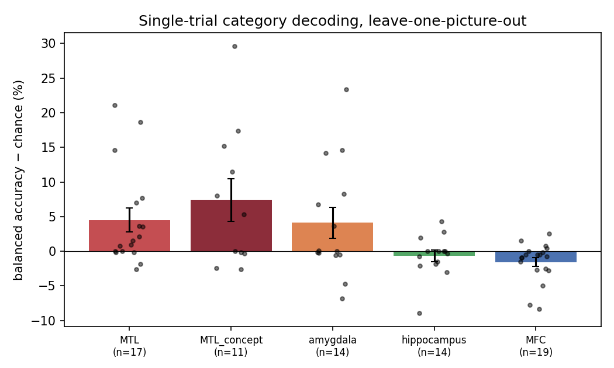
Population geometry: RSA against eight networks
For each screening session we built the MTL and MFC population RDM (correlation distance over z-scored unit responses, 54–63 pictures) and compared it with layer-wise RDMs from AlexNet, VGG-16, ResNet-18/50, ConvNeXt-T, ViT-B/16, DINOv2-S and CLIP ViT-B/32. In every architecture the MTL correlation climbs monotonically with depth and peaks at the last layers (best: clip_vitb32 ln_post, ρ = 0.061, p = 0.019 across 18 sessions; category RDM alone 0.055 with hand-corrected labels; low-level 0.014). The MFC stays flat near 0.017. Split-half reliability of an MTL RDM is only ≈0.06, so ceiling-normalised ρ is ≈0.2–0.25. Amygdala (0.05–0.06) ≫ hippocampus (0.015); hippocampal geometry is not categorical (ρ = 0.003 with the category RDM) but is weakly captured by late layers.
Because the picture pool is shared, per-session RDMs can be rank-normalised and pooled over co-shown pairs into a consensus 342×342 MTL RDM. Against it the best layer reaches ρ = 0.129 (permutation p = 0.005, ≈10 null SDs), category 0.117. Partialling out the category and low-level RDMs leaves CLIP's last layer significant (partial ρ = 0.037, p = 0.031; ResNet-50 avgpool 0.029, p = 0.041), while category is no longer significant once CLIP is controlled (p = 0.01) — late layers largely subsume the categorical structure and add a little to it. Restricted to within-category pairs, CLIP still tracks the MTL (ρ = 0.052, p = 0.015) whereas ResNet-50 does not (−0.006). In time, the correspondence rises from ~200 ms and peaks at 350 ms after picture onset, with late layers > category > early layers > low-level throughout.

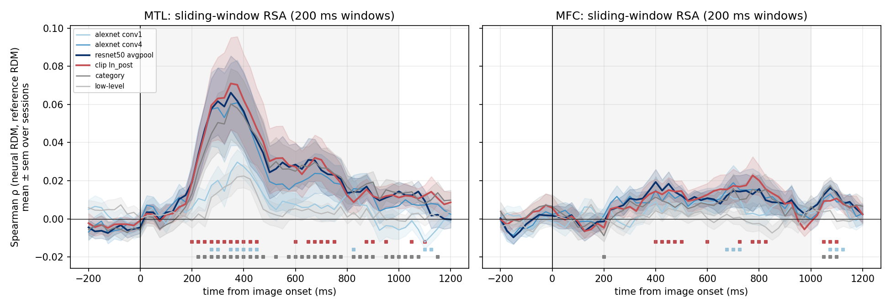
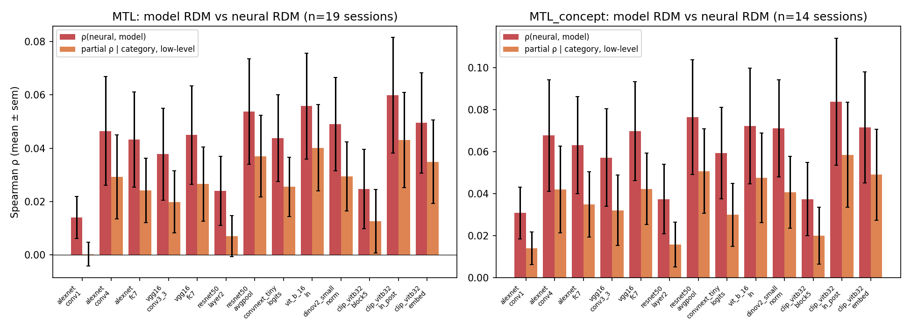
| region | model | best layer | mean ρ | sem | p | ρ / √reliability | sessions |
|---|---|---|---|---|---|---|---|
| MTL | alexnet | conv4 | 0.052 | 0.021 | 0.030 | 0.194 | 18.000 |
| MTL | vgg16 | logits | 0.054 | 0.017 | 0.007 | 0.234 | 18.000 |
| MTL | resnet18 | logits | 0.055 | 0.019 | 0.011 | 0.196 | 18.000 |
| MTL | resnet50 | avgpool | 0.058 | 0.021 | 0.013 | 0.203 | 18.000 |
| MTL | convnext_tiny | logits | 0.050 | 0.016 | 0.008 | 0.206 | 18.000 |
| MTL | vit_b_16 | ln | 0.058 | 0.021 | 0.016 | 0.241 | 18.000 |
| MTL | dinov2_small | norm | 0.052 | 0.018 | 0.013 | 0.214 | 18.000 |
| MTL | clip_vitb32 | ln_post | 0.061 | 0.023 | 0.019 | 0.252 | 18.000 |
| MTL | baseline:category | - | 0.055 | 0.018 | 0.008 | 0.185 | 18.000 |
| MTL | baseline:lowlevel | - | 0.014 | 0.006 | 0.047 | 0.071 | 18.000 |
| MFC | alexnet | conv5 | 0.017 | 0.007 | 0.031 | 0.257 | 19.000 |
| MFC | vgg16 | fc6 | 0.016 | 0.006 | 0.016 | 0.172 | 19.000 |
| MFC | resnet18 | logits | 0.015 | 0.007 | 0.041 | 0.149 | 19.000 |
| MFC | resnet50 | layer3 | 0.014 | 0.007 | 0.059 | 0.160 | 19.000 |
| MFC | convnext_tiny | stage3 | 0.013 | 0.005 | 0.031 | 0.110 | 19.000 |
| MFC | vit_b_16 | ln | 0.015 | 0.009 | 0.091 | 0.143 | 19.000 |
| MFC | dinov2_small | block8 | 0.014 | 0.007 | 0.061 | 0.130 | 19.000 |
| MFC | clip_vitb32 | ln_post | 0.016 | 0.008 | 0.062 | 0.135 | 19.000 |
| MFC | baseline:category | - | 0.007 | 0.007 | 0.306 | 0.084 | 19.000 |
| MFC | baseline:lowlevel | - | 0.002 | 0.003 | 0.510 | 0.050 | 19.000 |
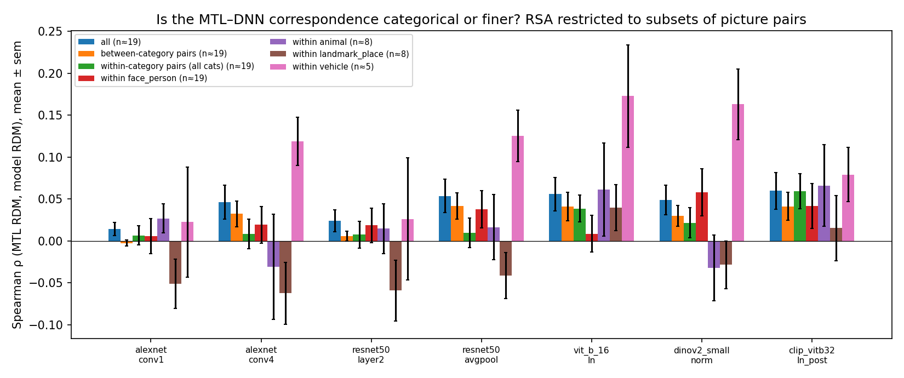
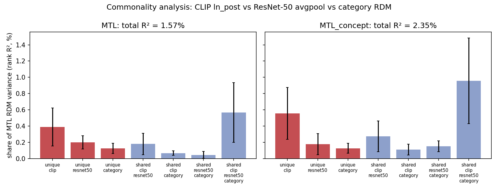
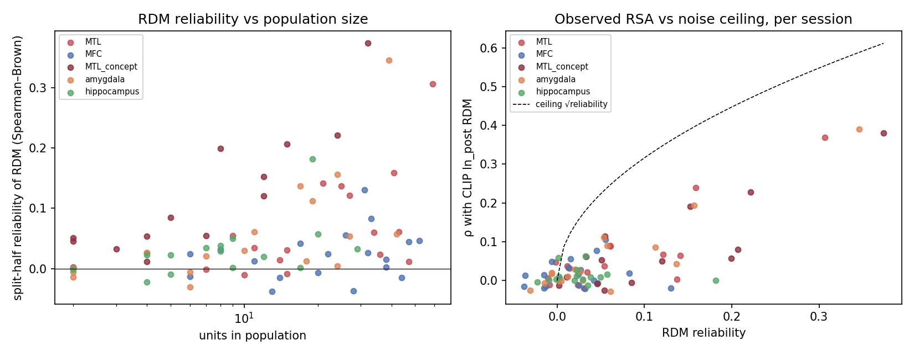
Single neurons generalise along DNN similarity
Take a concept cell, drop its preferred picture, and ask whether its firing to the remaining 53–62 pictures follows their similarity to that preferred picture in a given layer. It does: mean Spearman ρ reaches 0.17 at resnet50 avgpool with 77% of MTL concept cells positive, against a random-anchor null of ≈0. The effect grows with layer depth (amygdala late > early, p = 0.0006); MFC concept cells show it only at late layers; non-selective MTL cells barely at all.
Ridge regression from layer features to each cell's 54–63-image tuning curve reaches a mean cross-validated r of 0.10 for MTL concept cells at the best layer (vgg16 fc7; 57% of cells above zero; ≈0.13 of the split-half ceiling), versus -0.01 for a category one-hot baseline. Raw CV r is negatively biased for signal-free targets with ~60 samples, so we also computed a per-cell picture-label-shuffle null (100 shuffles). Against that null the picture changes: debiased r for MTL concept cells is 0.29 for CLIP's last layer (47% of cells individually significant), 0.26 for DINOv2, ≈0.20 for AlexNet fc6 / ResNet-50 avgpool / VGG fc7 and 0.21 for a category one-hot — CLIP is the best single-cell predictor once the bias is removed, and MFC concept cells are predicted about half as well (0.21).
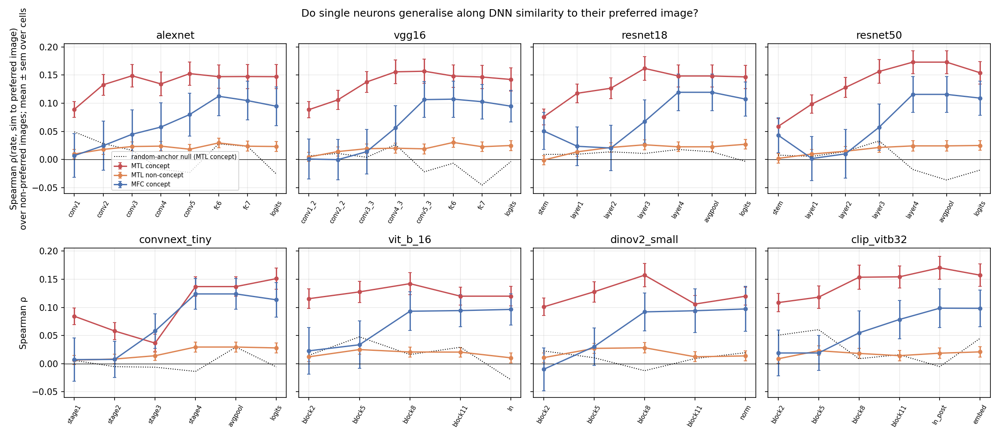
Who carries this generalisation? The strongest cases are broadly tuned "celebrity face" cells whose response ramps smoothly with CLIP similarity across other famous faces; the classic sparse concept cells (a horse cell, an astronaut cell) sit at ρ ≈ 0. Across cells, sparser tuning goes with weaker generalisation (DoS vs ρ −0.2, p ≤ 0.03) and face-preferring cells generalise most (ρ 0.22 vs 0.07, p = 0.001) — but even the sparse half of the population averages ρ ≈ 0.14 > 0.

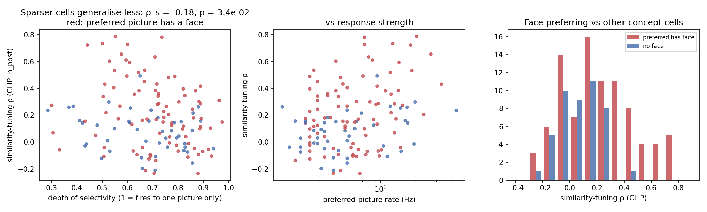
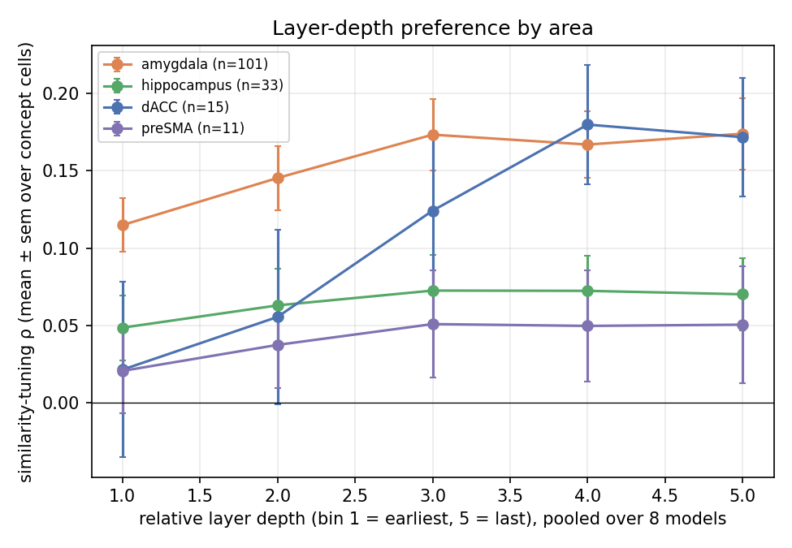
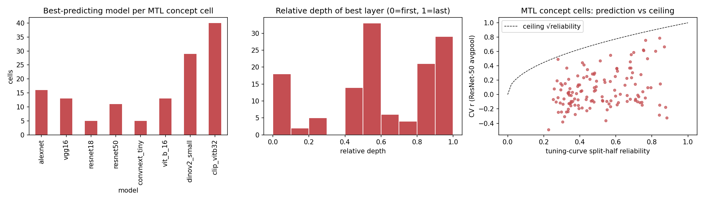
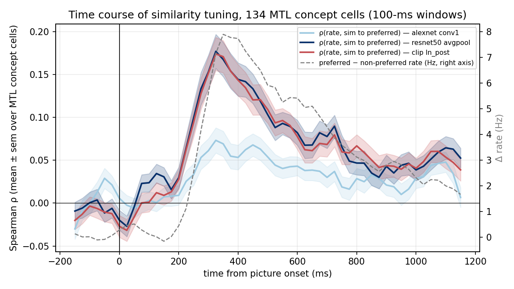
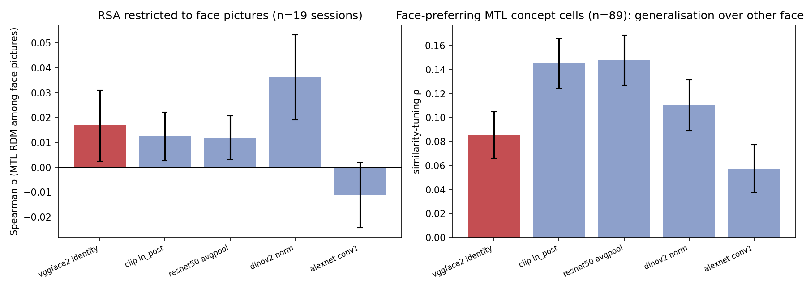
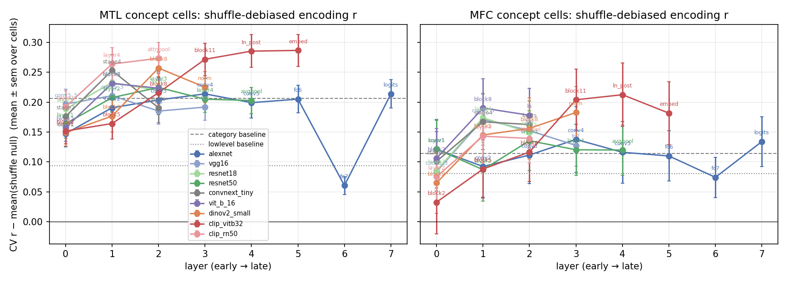
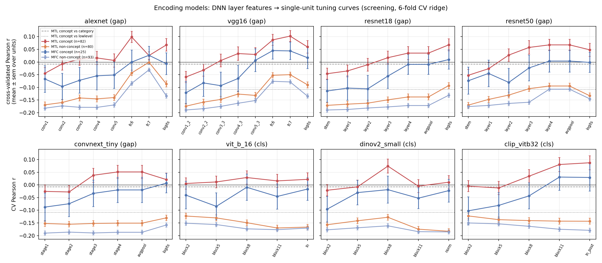
| model | best layer | cells | mean CV r | sem | frac r>0 | r / ceiling |
|---|---|---|---|---|---|---|
| alexnet | fc6 | 132 | 0.099 | 0.022 | 0.545 | 0.122 |
| vgg16 | fc7 | 132 | 0.102 | 0.022 | 0.568 | 0.128 |
| resnet18 | logits | 132 | 0.068 | 0.024 | 0.530 | 0.077 |
| resnet50 | avgpool | 132 | 0.068 | 0.022 | 0.515 | 0.078 |
| convnext_tiny | avgpool | 132 | 0.051 | 0.026 | 0.485 | 0.048 |
| vit_b_16 | ln | 132 | 0.073 | 0.026 | 0.508 | 0.083 |
| dinov2_small | block8 | 132 | 0.074 | 0.027 | 0.470 | 0.088 |
| clip_vitb32 | ln_post | 132 | 0.087 | 0.028 | 0.538 | 0.097 |
| baseline | category | 132 | -0.008 | 0.027 | 0.364 | -0.035 |
Behaviour
With only five memoranda per patient there is little similarity variance to work with. On OUT trials, a lure probe that is CLIP-similar to the encoded set slows correct responses (mean within-subject slope +0.055 s per SD, p = 0.04 uncorrected); other spaces and outcomes are null, and within-set similarity trends, if anything, toward faster responses.
| space | trials | predictor | subjects | mean slope | sem | p | Wilcoxon p |
|---|---|---|---|---|---|---|---|
| clip | OUT | sim_probe_max | 21 | 0.055 | 0.026 | 0.044 | 0.055 |
| clip | IN | sim_probe_other | 21 | -0.020 | 0.032 | 0.533 | 0.892 |
| clip | ALL | sim_within | 21 | -0.040 | 0.022 | 0.090 | 0.179 |
| resnet50 | OUT | sim_probe_max | 21 | 0.003 | 0.027 | 0.924 | 0.892 |
| resnet50 | IN | sim_probe_other | 21 | -0.009 | 0.029 | 0.747 | 0.973 |
| resnet50 | ALL | sim_within | 21 | -0.026 | 0.018 | 0.175 | 0.216 |
| dinov2 | OUT | sim_probe_max | 21 | 0.009 | 0.033 | 0.781 | 0.633 |
| dinov2 | IN | sim_probe_other | 21 | -0.014 | 0.018 | 0.446 | 0.179 |
| dinov2 | ALL | sim_within | 21 | -0.032 | 0.016 | 0.053 | 0.038 |

Do architecture or training objective matter?
Not much. Ranking models by their best layer under RSA (paired over sessions) or similarity tuning (paired over cells), the eight networks are statistically close: CLIP and ResNet-50 lead by a hair, only CLIP > AlexNet reaches p = 0.03 in RSA, and the self-supervised DINOv2 sits mid-pack. The cleanest test holds architecture fixed: OpenAI's CLIP ResNet-50 against the ImageNet-trained ResNet-50, layer by layer, differs by at most 0.007 on either criterion (all p ≥ 0.16). Any modern network's late layers capture roughly the same part of MTL selectivity, and the training objective is not what matters.
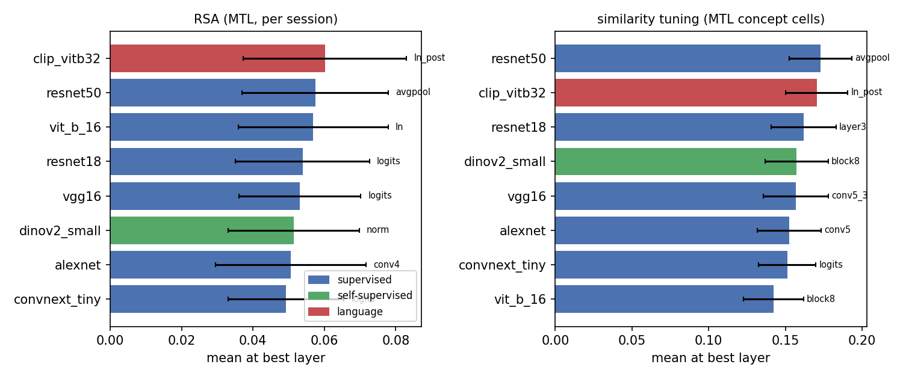
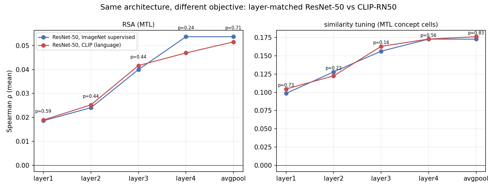
| criterion | model | objective | best layer | n | mean | sem |
|---|---|---|---|---|---|---|
| RSA (MTL, per session) | alexnet | supervised | conv4 | 18 | 0.051 | 0.021 |
| RSA (MTL, per session) | vgg16 | supervised | logits | 18 | 0.053 | 0.017 |
| RSA (MTL, per session) | resnet18 | supervised | logits | 18 | 0.054 | 0.019 |
| RSA (MTL, per session) | resnet50 | supervised | avgpool | 18 | 0.057 | 0.021 |
| RSA (MTL, per session) | convnext_tiny | supervised | logits | 18 | 0.049 | 0.016 |
| RSA (MTL, per session) | vit_b_16 | supervised | ln | 18 | 0.057 | 0.021 |
| RSA (MTL, per session) | dinov2_small | self-supervised | norm | 18 | 0.051 | 0.018 |
| RSA (MTL, per session) | clip_vitb32 | language | ln_post | 18 | 0.060 | 0.023 |
| similarity tuning (MTL concept cells) | alexnet | supervised | conv5 | 134 | 0.153 | 0.021 |
| similarity tuning (MTL concept cells) | vgg16 | supervised | conv5_3 | 134 | 0.157 | 0.021 |
| similarity tuning (MTL concept cells) | resnet18 | supervised | layer3 | 134 | 0.162 | 0.021 |
| similarity tuning (MTL concept cells) | resnet50 | supervised | avgpool | 134 | 0.173 | 0.020 |
| similarity tuning (MTL concept cells) | convnext_tiny | supervised | logits | 134 | 0.151 | 0.019 |
| similarity tuning (MTL concept cells) | vit_b_16 | supervised | block8 | 134 | 0.142 | 0.020 |
| similarity tuning (MTL concept cells) | dinov2_small | self-supervised | block8 | 134 | 0.157 | 0.021 |
| similarity tuning (MTL concept cells) | clip_vitb32 | language | ln_post | 134 | 0.170 | 0.020 |
| encoding r (MTL concept cells) | alexnet | supervised | fc6 | 132 | 0.099 | 0.022 |
| encoding r (MTL concept cells) | vgg16 | supervised | fc7 | 132 | 0.102 | 0.022 |
| encoding r (MTL concept cells) | resnet18 | supervised | logits | 132 | 0.068 | 0.024 |
| encoding r (MTL concept cells) | resnet50 | supervised | avgpool | 132 | 0.068 | 0.022 |
| encoding r (MTL concept cells) | convnext_tiny | supervised | avgpool | 132 | 0.051 | 0.026 |
| encoding r (MTL concept cells) | vit_b_16 | supervised | ln | 132 | 0.073 | 0.026 |
| encoding r (MTL concept cells) | dinov2_small | self-supervised | block8 | 132 | 0.074 | 0.027 |
| encoding r (MTL concept cells) | clip_vitb32 | language | ln_post | 132 | 0.087 | 0.028 |
Caveats and what's next
- Population RDMs from ~20–60 sparse units are noisy (split-half ≈ 0.06); pooling across patients and restricting to concept cells help, but absolute ρ values are small and should be read against the ceiling.
- Concept-cell selection reuses the same responses that enter the similarity-tuning and encoding analyses (the preferred picture is excluded, and the random-anchor null is ≈ 0, but selection bias could still inflate the non-preferred slope slightly).
- Sternberg concept cells were selected on all encoding presentations (paper: encoding 1 only), giving 29% rather than 21% MTL concept cells in that task.
- CLIP zero-shot labels are accurate for animals/vehicles/food but blur "face" vs "scene with people"; a hand-checked label pass would tighten A5.
- Cross-validated encoding r is negatively biased under the null; the shuffle-null-debiased values are the ones to quote (script 51 covers six predictors — extending it to every layer is on the list).
- Next: variance partitioning between models, a face-trained network, per-cell noise-corrected encoding at each layer, and time-resolved encoding models.